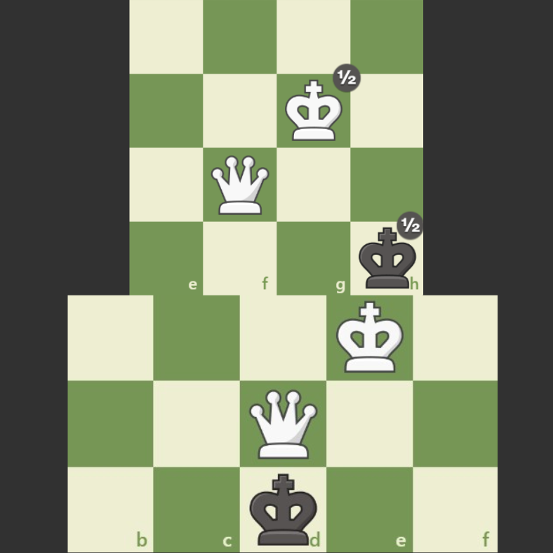
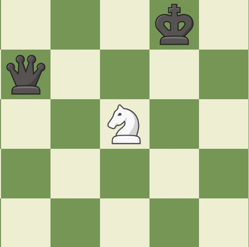
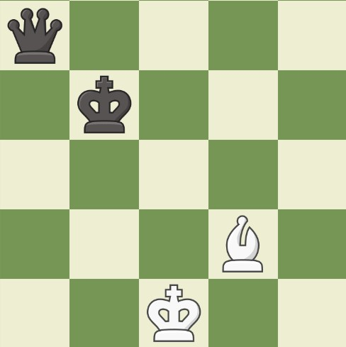

<html>
<head>
    <meta charset="UTF-8">
    <meta name="viewport" content="width=device-width, initial-scale=1.0">

    <link href="https://cdn.jsdelivr.net/npm/bootstrap@5.3.0/dist/css/bootstrap.min.css" rel="stylesheet">
    <style>
html {
    scroll-behavior: smooth;
}
body {
        background-color: #313131; 
        font-family: 'Inter', sans-serif;
}
        
#main_img{
    width: 150;
    height: 60;
}
#github{
    position: absolute;
    bottom: 10px;
    left: 10px;
    width: 25px;
}
#link{
    position: absolute;
    bottom: 35px;
    left: 10px;
    width: 25px;
}


/* 왼쪽 내비게이션 영역 스타일 */
.sidebar {
    background-color: #222222;    
    width: 150px; /* 원하는 너비 설정 */
    padding: 20px 20px 20px 0;
    box-shadow: 2px 0 5px rgba(0, 0, 0, 0.1);

    position: fixed; 
    height: 100%;
    transition: width 0.3s ease;
    display: flex;
    flex-direction: column;
}
.sidebar .btn {
    width: 100%; /* 부모 요소(사이드바)의 너비를 100% 채우도록 설정 */
    
    /* 텍스트가 중앙이 아닌 왼쪽에서 시작하도록 정렬 */
    text-align: left;
    padding-top: 10px;
    padding-bottom: 10px;
}
.sidebar.collapsed {
    width: 60px; /* 접혔을 때의 너비 (아이콘만 보일 정도) */
    padding: 20px 0; /* 너비가 줄어들었으므로 좌우 패딩을 줄이거나 제거 */
}
.sidebar.collapsed .btn {
    /* 너비를 고정하거나 내부 콘텐츠에 맞춥니다. */
    width: 40px; 
    text-align: center;
    visibility: hidden;
}
.sidebar.collapsed p{
    visibility: hidden;
}
#stair{
    background-image: url("이미지/계단.png");
    background-repeat: no-repeat;
    background-position: left center; /* 왼쪽 중앙에 위치 */
    padding-left: 30px; /* 아이콘 공간 확보를 위해 왼쪽 패딩 추가 */
    background-size: 20px 20px; /* 아이콘 크기 설정 */
    height: 30px;
    line-height: 30px;
}
#dot{
    background-image: url("이미지/점.png");
    background-repeat: no-repeat;
    background-position: left center; /* 왼쪽 중앙에 위치 */
    padding-left: 30px; /* 아이콘 공간 확보를 위해 왼쪽 패딩 추가 */
    background-size: 23px 23px; /* 아이콘 크기 설정 */
    height: 46px;
    line-height: 46px;
}
/*
#beginner-btn{
    background-image: url("이미지/1.png");
    background-repeat: no-repeat;
    background-position: left center;
    padding-left: 30px; 
    background-size: 30px 30px;
    height: 46px;
    line-height: 46px;
}
#intermediate-btn{
    background-image: url("이미지/2.png");
    background-repeat: no-repeat;
    background-position: left center; 
    padding-left: 30px; 
    background-size: 30px 30px;
    height: 46px;
    line-height: 46px;
}
#advanced-btn{
    background-image: url("이미지/3.png");
    background-repeat: no-repeat;
    background-position: left center;
    padding-left: 30px;
    background-size: 30px 30px;
    height: 46px;
    line-height: 46px;
} 
*/

#mySidebar{
    padding: 0
}


.main-content {
    flex-grow: 1;
    padding: 20px;
    overflow-y: auto;
}
.container-wrapper {
    display: flex; /* 자식 요소들을 가로로 나란히 배치 */
}


.sidebar .btn {
    border-radius: 0 !important; /* 모서리를 0으로 강제 설정 */
}
.toggle-btn {
    position: absolute;
    bottom: 20px; /* 사이드바 아래에서 20px 위 */
    right: 0; 
    transform: translateX(50%); /* 버튼을 오른쪽 모서리에 반쯤 걸치도록 이동 */
    background: #222222;
    border: 1px solid #444;
    cursor: pointer;
    padding: 5px 10px;
    border-radius: 5px;
    color: white;
    z-index: 100;
}
.main-image {
    margin: auto;
    /* 이미지 크기 설정 (예시) */
    width: 600px; /* 원하는 크기로 조정 */
    height: auto;
    max-width: 90vw; /* 화면 크기에 반응하도록 최대 폭 제한 */
    /* 선택 사항: 이미지 아래쪽 여백 추가 */
    margin-bottom: 30px; 
}
#start{
    padding-left: 80px;
    padding-right: 80px;
}

.main-content #getstart{
    color:white
}
.main-content a{
    text-decoration: none;
    color:#a1a1a1;
    margin-bottom: 170px;
}
#stair_ex{
    color: rgb(170, 170, 170);
    margin-bottom: 50px;
}
.learning-section { 
    padding: 40px; 
    margin-bottom: 50px; 
    border-radius: 8px; 
    background-color: #3a3a3a; 
    color: white; 
    /* 텍스트를 가운데 정렬합니다. */
    text-align: center;
}
#subject{
    margin-left: 200px;
}
.main-content { flex-grow: 1; padding: 20px; overflow-y: auto; margin-left: 150px; }
        .learning-section { padding: 40px; margin-bottom: 50px; border-radius: 8px; background-color: #3a3a3a; color: white; }
        .learning-section h2 { color: #f0ad4e; margin-bottom: 25px; text-align: center; }
        .learning-section h3 { color: #ffffff; margin-top: 20px; }
        .learning-section p { color: #cccccc; line-height: 1.6; }
        
        /* 텍스트와 이미지 컨테이너 (Row) 스타일 */
        .content-row { margin-bottom: 30px; }
        
        /* 텍스트 컬럼 */
        .text-col { text-align: left; } /* 텍스트는 좌측 정렬로 가독성 확보 */
        
        /* 이미지 컬럼 */
        .image-col { display: flex; align-items: center; justify-content: center; }
        .piece-img { max-width: 100%; height: auto; border: 2px solid #555; border-radius: 5px; }
        
        /* ul/li 목록 스타일 수정 */
        .list-unstyled { padding-left: 0; }
        .list-unstyled li { text-align: left; margin-bottom: 5px; }


    </style>
</html>
<body>

<div class="container-wrapper">
    <nav class="sidebar" id="mySidebar">
        <a href="chess_main.html">
            
        </a>
        <nav class="learning-steps">
            <div class="text-light">
            <p id="stair">단계 배우기</p>
            </div>
            
                <button class="btn btn-dark **ms-0**" id="beginner-btn">초급</button>
                <button class="btn btn-dark **ms-0**"  id="intermediate-btn">중급</button>
                <button class="btn btn-dark **ms-0**" id="advanced-btn">고급</button>
            
        </nav>
    
        <nav class="detailed-sections">
            <div class="text-light">
            <p id="dot">세부 학습 주제</p>
            </div>
           
                <button class="btn btn-dark **ms-0**" id="glossary-btn">용어 해설</button>
                <button class="btn btn-dark **ms-0**" id="master-btn">유명 경기</button>
                <button class="btn btn-dark **ms-0**" id="puzzles-btn">문제 풀기</button>
                <button class="btn btn-dark **ms-0**" id="news-btn">오프닝  </button>
            
        </nav>
        <button class="toggle-btn" id="toggleButton">
            <span>◀</span> </button>
            <a href="https://github.com/yeonwoo09seo-alt/ChessLearningWepPage/tree/main" target="_blank">
                
            </a>
            <a href="product_detail.html" target="_blank">
                
            </a>
    </nav>
    
    <div class="main-content" id="mainContent">
    <main class="main-content">
        <h1 class="text-light mb-5 text-center">♟️ 초급: 체스의 기본 다지기</h1>

        <section id="rules-section" class="learning-section">
            <h2>1. 기본 규칙: 체스판과 기물 움직임</h2>
            <p class="text-center">체스를 시작하기 위한 가장 기본적인 규칙들을 익힙니다. 체스판의 구조와 기물들의 고유한 움직임을 정확히 이해하는 것이 중요합니다.</p>
            
            <div id="board-setup" class="row content-row align-items-center">
                <div class="col-md-6 text-col">
                    <h3>1.1 체스판과 초기 배치</h3>
                    <p>체스판은 8x8 격자, 총 64칸으로 이루어져 있습니다. 오른쪽 하단의 칸은 항상 **하얀색**입니다. 기물은 반드시 **백색 킹이 e1 칸**, **흑색 킹이 e8 칸**에 오도록 배치해야 합니다.</p>
                </div>
                <div class="col-md-6 image-col">
                    
                </div>
            </div>

            <div id="piece-movement" class="row content-row align-items-center flex-md-row-reverse">
                <div class="col-md-6 text-col">
                    <h3>1.2 기물별 움직임 (앙파상, 캐슬링 포함)</h3>
                    <p>각 기물은 고유한 방식으로 움직입니다. 특히, 폰의 **앙파상**과 킹/룩의 **캐슬링**은 중요한 특수 규칙입니다.</p>
                    <ul class="list-unstyled">
                        <li>**킹 (King):** 모든 방향으로 **한 칸** 이동.</li>
                        <li>**퀸 (Queen):** 모든 방향으로 원하는 만큼 이동.</li>
                        <li>**룩 (Rook):** 수평/수직으로 원하는 만큼 이동.</li>
                        <li>**비숍 (Bishop):** 대각선으로 원하는 만큼 이동.</li>
                        <li>**나이트 (Knight):** **'L'자 형태**로 이동하며, 유일하게 다른 기물을 뛰어넘을 수 있습니다.</li>
                        <li>**폰 (Pawn):** 앞으로 한 칸씩 전진하며, 첫 이동 시에만 두 칸 이동 가능. 대각선 앞으로 한 칸을 공격(잡기)합니다.</li>
                    </ul>
                </div>
                <div class="col-md-6 image-col">
                    
                </div>
            </div>

            <div id="check-mate" class="row content-row align-items-center">
                <div class="col-md-6 text-col">
                    <h3>1.3 체크와 체크메이트</h3>
                    <p>**체크(Check):** 상대 킹이 현재 공격받는 상황입니다.</p>
                    <p>**체크메이트(Checkmate):** 킹이 공격받고 있으며, 다음 세 가지 방법(막기, 피하기, 잡기) 중 어느 것으로도 공격을 피할 수 없는 상황입니다. 게임이 **종료**되고 체크메이트를 건 플레이어가 승리합니다.</p>
                    <p>**스테일메이트(Stalemate):** 킹은 공격받지 않지만, 움직일 수 있는 합법적인 수가 전혀 없는 상황입니다. 이 경우 **무승부(Draw)**로 처리됩니다.</p>
                </div>
                <div class="col-md-6 image-col">
                    
                </div>
            </div>
        </section>
        
        <hr class="text-light">

        <section id="strategy-section" class="learning-section">
            <h2>2. 초기 전략: 오프닝의 3가지 핵심 원칙</h2>
            <p class="text-center">체스 게임의 초반부(오프닝)에서 지켜야 할 가장 중요한 세 가지 원칙을 익혀, 불리한 위치에 놓이는 것을 방지합니다.</p>
            
            <div id="center-control" class="row content-row align-items-center">
                <div class="col-md-6 text-col">
                    <h3>2.1 중앙 통제 (Control the Center)</h3>
                    <p>체스판의 중앙 네 칸 (d4, e4, d5, e5)을 폰이나 기물로 장악하는 것이 중요합니다. 중앙을 통제하면 기물들이 더 넓은 활동 공간을 확보할 수 있습니다.</p>
                </div>
                <div class="col-md-6 image-col">
                    
                </div>
            </div>

            <div id="development-king" class="row content-row align-items-center flex-md-row-reverse">
                <div class="col-md-6 text-col">
                    <h3>2.2 기물 전개 (Develop Pieces)</h3>
                    <p>폰이 아닌 나머지 기물들(나이트, 비숍, 퀸, 룩)을 재빨리 활동적인 위치로 꺼내야 합니다. 특히 나이트와 비숍을 먼저 전개하는 것이 일반적입니다.</p>
                    <hr class="text-light">
                    <h3>2.3 킹의 안전 (King Safety)</h3>
                    <p>가장 중요한 기물인 킹을 안전하게 보호해야 합니다. 이를 위해 초반에 **캐슬링**을 통해 킹을 측면으로 옮기고 룩을 활동적으로 만듭니다.</p>
                </div>
                <div class="col-md-6 image-col">
                    
                </div>
            </div>
        </section>
        
        <hr class="text-light">

        <section id="tactics-section" class="learning-section">
            <h2>3. 기본 전술: 상대 기물 잡는 법</h2>
            <p class="text-center">기본 전술은 짧은 수 안에 상대 기물을 잡거나 유리한 위치를 확보하는 기술입니다. 초급에서 가장 자주 쓰이는 두 가지 전술을 배웁니다.</p>
            
            <div id="fork" class="row content-row align-items-center">
                <div class="col-md-6 text-col">
                    <h3>3.1 포크 (Fork)</h3>
                    <p>하나의 기물이 동시에 **두 개 이상의** 상대 기물을 위협하는 전술입니다. 나이트는 포크에 매우 효과적인 기물입니다.</p>
                    <p class="example-text">예: 나이트가 킹과 퀸을 동시에 위협하면, 킹을 피해야 하므로 퀸을 잃게 됩니다.</p>
                </div>
                <div class="col-md-6 image-col">
                    
                </div>
            </div>

            <div id="pin" class="row content-row align-items-center flex-md-row-reverse">
                <div class="col-md-6 text-col">
                    <h3>3.2 핀 (Pin)</h3>
                    <p>상대 기물이 움직이면 그 뒤에 있는 더 가치 있는 기물(주로 킹이나 퀸)이 공격받는 상황을 만드는 전술입니다. 룩이나 비숍처럼 직선으로 움직이는 기물이 사용됩니다.</p>
                    <p class="example-text">예: 비숍이 룩을 공격하고 있는데, 룩이 움직이면 룩 뒤에 있는 킹이 체크를 당하는 경우 룩은 움직일 수 없습니다.</p>
                </div>
                <div class="col-md-6 image-col">
                    
                </div>
            </div>
            
            <div id="exercise" class="mt-5">
                <h3 class="text-center">3.3 실전 연습</h3>
                <p class="text-center">배운 기본 규칙, 초기 전략, 전술을 적용하여 간단한 퍼즐을 풀어보세요.</p>
            </div>
        </section>
        


    


    </div>
    </main>
</div>
    <script src="https://cdn.jsdelivr.net/npm/bootstrap@5.3.0/dist/js/bootstrap.bundle.min.js"></script>
    <script src="main.js"></script>
</body>


<a href="https://www.flaticon.com/kr/free-icons/" title="골 아이콘">골 아이콘 제작자: Freepik - Flaticon</a>

<html>